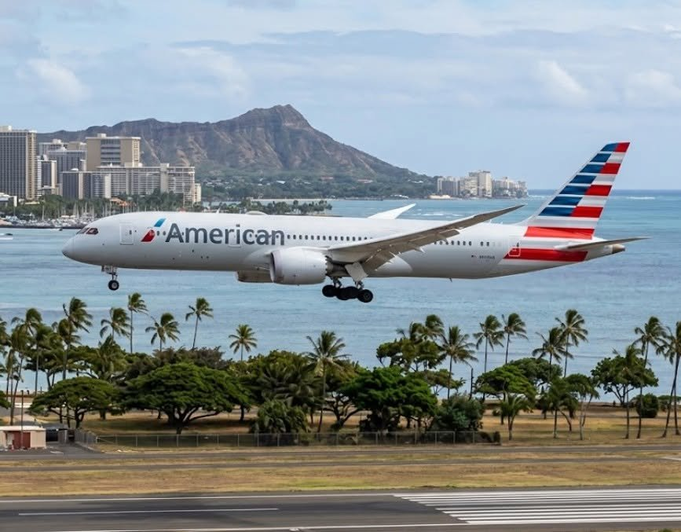

US Aviation Faces Fresh Safety Questions After Miami Plane Collision and Series of Near-Misses
News
A collision between two aircraft at Miami International Airport has renewed concerns about aviation safety in the United States, following an earlier near-midair incident in Los Angeles and a nationwide air traffic control disruption.
US aviation authorities are investigating a collision involving a UPS cargo aircraft and a Copa Airlines passenger plane at Miami International Airport on Saturday, November 14, 2026. The incident occurred as both aircraft were moving along the airport taxiways, raising fresh questions about ground operations and coordination between aircraft and air traffic controllers.
According to reports, the Copa Airlines Boeing 737, which had arrived from Panama City carrying 166 passengers and six crew members, struck the nose of a UPS Boeing 767 with its wingtip. The UPS aircraft was preparing to depart for Bogotá, Colombia. Two people reportedly received treatment for minor injuries, although no hospital transportation was required. All passengers were safely evacuated.
The Miami incident comes days after a separate near-midair collision involving Air France and American Airlines aircraft at Los Angeles International Airport. Air traffic controllers intervened after the two aircraft came dangerously close following takeoff, with reports indicating a vertical separation of approximately 400 to 500 feet.
US aviation also experienced a significant disruption on November 13, when a telecommunications failure affecting air traffic control systems forced the FAA to order a nationwide ground stop. Thousands of flights were affected as authorities worked to restore normal operations.
Although the incidents have different circumstances and causes, their close timing has placed renewed attention on the reliability of America's aviation infrastructure, airport coordination and air traffic control systems. Investigations will be essential in determining whether procedural failures, technical problems or other factors contributed to the incidents.
For millions of passengers who depend on American air travel, the developments highlight the importance of maintaining reliable systems that keep aircraft and passengers safe.